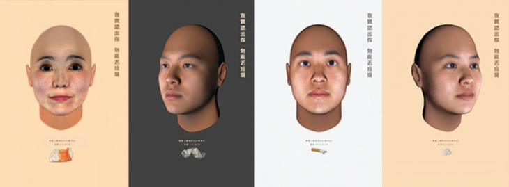
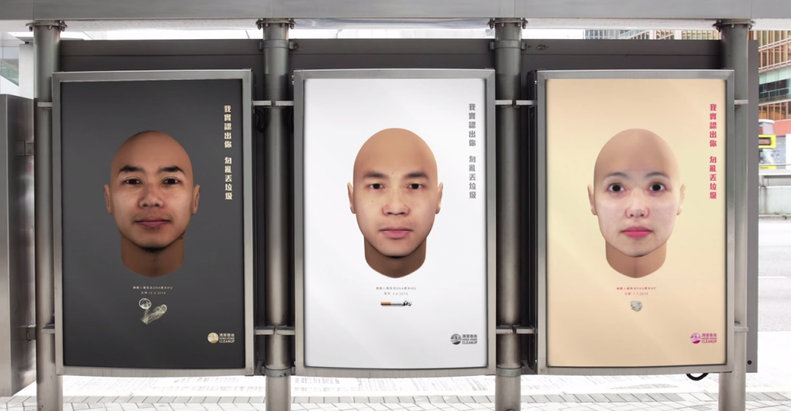

Hong Kong'ta DNA Analizi ile Çöp Atanlar Tespit Ediliyor
Hong Kong’ta sokakları temiz tutmak adına başlatılan çalışma bir hayli ilginç. Çevre kirliliği üzerine yapılan en iyi çalışma diyebiliriz. Hong Kong’ta “The Face of Litter” (Çöplerin Yüzü) kampanyası ile bilim kurgu filmlerini aratmayan bir kampanya başlatıldı. Sokakları temiz tutmak adına başlatılan kampanyada The Nature Conservancy ve Ecozine beraber çalışıyor. Amaç sokağa atılan çöplerdeki DNA’lardan yararlanarak bunları kimin attığını tespit etmek. Dna analizi yapılarak yere çöp atanlar tespit ediliyor.

Öncelikle sokaklarda yere atılan çöpler toplanıyor. Çöplerdeki DNA’lar analiz ediliyor ve çöplerin atıldığı mahalledeki insanlar inceleniyor. Bu bilgiler dijital ortamda şekillendiriliyor. DNA ile kişilerin tam olarak resimleri çıkarılamaz ancak saç ve ten rengi, cinsiyetleri öğrenilmesi mümkün. Bundan yararlanarak suçluların gerçeğe yakın yüz profilleri oluşturuluyor. Bununla da kalmıyor bütün billboardlara afiş olarak asılıyor ve sosyal medyada paylaşılıyor. Çevreci olan bu çalışma Hong Kong ve dünyada yankı uyandırdı.
